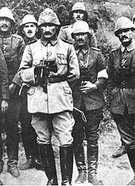

In 1914, the Ottoman Empire entered the European and Middle Eastern theatres of World War I allied with the Central Powers. Mustafa Kemal was given the task of organizing and commanding the 19th Division attached to the Fifth Army during the Battle of Gallipoli. Mustafa Kemal became the front-line commander after correctly anticipating where the Allies would attack and holding his position until they retreated. Following the Battle of Gallipoli, Mustafa Kemal served in Edirne until 14 January 1916. He was then assigned to the command of the XVI Corps of the Second Army and sent to the Caucasus Campaign after the massive Russian offensive had reached key Anatolian cities. On 7 August, Mustafa Kemal rallied his troops and mounted a counteroffensive. Two of his divisions captured Bitlis and Muş, upsetting the calculations of the Russian Command.
Following this victory, the CUP government in Constantinople proposed to establish a new army in Hejaz (Hicaz Kuvve-i Seferiyesi) and appoint Mustafa Kemal to its command, but he refused the proposal and this army was never established. Instead, on 7 March 1917, Mustafa Kemal Pasha was promoted from the command of the XVI Corps to the overall command of the Second Army, although the Czar's armies were soon withdrawn when the Russian Revolution erupted.

In July 1917, he was appointed to the command of the Seventh Army, replacing Fevzi Pasha on 7 August 1917, who was under the command of the German general Erich von Falkenhayn's Yildirim Army Group (after the British forces of General Edmund Allenby captured Jerusalem in December 1917, Erich von Falkenhayn was replaced by Otto Liman von Sanders who became the new commander of the Yıldırım Army Group in early 1918.) Mustafa Kemal Pasha could not get along well with General von Falkenhayn and, together with Miralay İsmet Bey, wrote a report to Grand Vizier Talaat Pasha regarding the grim situation and lack of adequate resources in the Palestinian front; but Talaat Pasha ignored their observations and refused their suggestion to form a stronger defensive line to the north, in Ottoman Syria (in parts of the Beirut Vilayet, Damascus Vilayet and Aleppo Vilayet), with Turks instead of Germans in command. Following the rejection of his report, Mustafa Kemal resigned from the Seventh Army and returned to Constantinople. There, he was assigned with the task of accompanying the crown prince (and future sultan) Mehmed Vahideddin during his train trip to Austria-Hungary and Germany. While in Germany, Mustafa Kemal visited the German lines in the west European front and came to the conclusion that the Central Powers would soon lose the war. He did not hesitate to openly express this opinion to Kaiser Wilhelm II and his high-ranking generals in person. During the return trip, he briefly stayed in Karlsbad and Vienna for medical treatment.
When Mehmed VI became the new Sultan of the Ottoman Empire in July 1918, he called Mustafa Kemal Pasha to Constantinople, and in August 1918 assigned him to the command of the Seventh Army in Palestine. Mustafa Kemal arrived in Aleppo on 26 August 1918, then continued south to his headquarters in Nablus. The Seventh Army was holding the central sector of the front lines. On 19 September, at the beginning of the Battle of Megiddo, the Eighth Army was holding the coastal flank, but fell apart and Liman Pasha ordered the Seventh Army to withdraw to the north in order to prevent the British from conducting a short envelopment to the Jordan River. The Seventh Army retired towards the Jordan River but was destroyed by British aerial bombardment during its retreat from Nablus on 21 September 1918. Nevertheless, Mustafa Kemal managed to form a defense line to the north of Aleppo. According to Lord Kinross, Mustafa Kemal was the only Turkish general in the war who never suffered a defeat.
The war ended with the Armistice of Mudros which was signed on 30 October 1918, and all German and Austro-Hungarian troops in the Ottoman Empire were granted ample time to withdraw. On 31 October, Kemal was appointed to the command of the Yıldırım Army Group, replacing Liman von Sanders. He organized the distribution of weapons to the civilians in Antep in case of a defensive conflict against the invading Allies.
Mustafa Kemal Pasha's last active service in the Ottoman Army was organizing the return of the Ottoman troops left behind to the south of this line. In early November 1918, the Yıldırım Army Group was officially dissolved and Mustafa Kemal returned to an occupied Constantinople, the Ottoman capital, on 13 November 1918. For a period he worked at the headquarters of the Ministry of War (Harbiye Nezareti) in Constantinople and continued his activities in this city until 16 May 1919. Along the established lines of the partitioning of the Ottoman Empire, the Allies (British, Italian, French and Greek forces) occupied Anatolia. The occupation of Constantinople, which was followed by the occupation of İzmir (the two largest Ottoman cities in that period) sparked the establishment of the Turkish National Movement and the Turkish War of Independence.